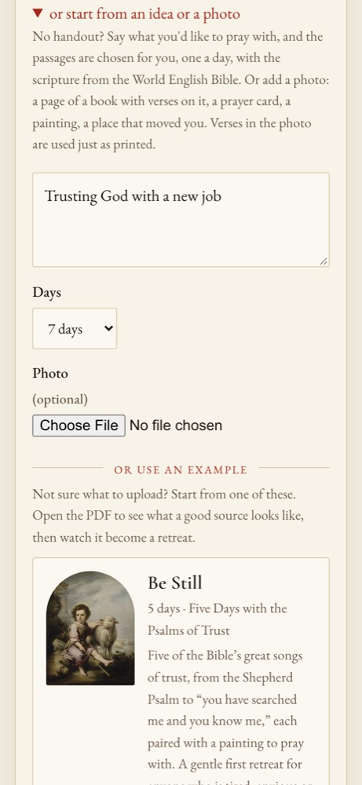

“Trusting God with a new job”, or a photo of a page of verses, becomes a retreat of as many days as you choose.

POST /api/retreats with idea, idea_days and an optional photo: 202 at once.app/inspiration.py gives the model the idea and the photo; it answers with a title and, for each day, a Bible reference, or says the text is on the photo.image0.jpg, shown while prayingReads the photo and chooses the passages, in a JSON schema. Any model on the menu.
muse-glimmer reads photos; a model that can't is asked for words instead.
Public-domain World English Bible text, no key.